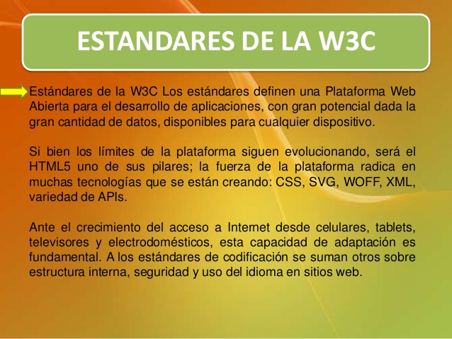

Las iniciales W3C representan el Consorcio World Wide Web (W3C). El cual es un consorcio internacional donde las organizaciones miembro, personal a tiempo completo y el público en general, trabajan conjuntamente para desarrollar estándares Web.
El W3C trata de alcanzar su objetivo principalmente a través de la creación de Estándares Web y Pautas. Desde 1994, el W3C ha publicado más de ciento diez estándares, denominados Recomendaciones del W3C. Cuenta además, con herramientas que nos permiten validar el código HTML y comprobar el código CSS de nuestro sitio web. Para conocer si cumplimos con los estándares recomendados.
El W3Ctambién está involucrado en tareas de educación y difusión, y en el desarrollo de software, sirviendo a su vez como foro abierto de discusión sobre la Web. Para que la Web alcance su máximo potencial, las tecnologías Web más importantes deben ser compatibles entre sí y permitir que cualquier hardware y software, utilizado para acceder a la Web, funcione conjuntamente. El W3C hace referencia a este objetivo como “interoperabilidad Web”.
Al publicar estándares abiertos (no propietarios) para lenguajes Web y protocolos, el W3C trata de evitar la fragmentación del mercado y, por lo tanto, la fragmentación de la Web.
Tim Berners-Lee y otros, crearon el W3C como un consorcio dedicado a producir consenso en relación a las tecnologías Web. Berners-Lee, que inventó la World Wide Web en 1989, mientras trabajaba en la Organización Europea de Investigación Nuclear (CERN), ha sido el director del W3C desde que se fundó en 1994.
Estándares de W3C
